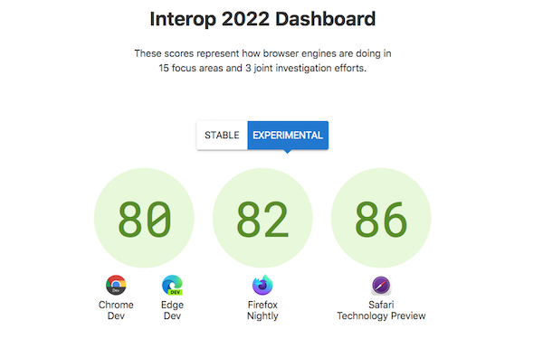

📣#developers #designers, this survey is for YOU! As #CSS is evolving faster than ever, it's important to help us prioritize what #browser vendors and #standards writers should push more strongly for in the coming year https://stateofcss.com/?source=w3cdevs
cc @LeaVerou https://twitter.com/SachaGreif/status/1576910255254298630
Getting faster convergence on critical features of the #WebPlatform was at the core of the presentation @rachelandrew gave at our #w3cdevs2022 meetup last month - video upcoming later this week!
https://www.w3.org/2022/09/meetup/speaker-rachel.html
https://twitter.com/w3cdevs/status/15769258023145021446 Oct.: @JalanbirdW3C is one of the panelists of the "Connectivity for 2022 and Beyond" session @iottechexpo, in #SantaClara 🇺🇸 #IoT #WoT
https://twitter.com/JalanbirdW3C/status/1575920153082023937
🗓️ w3c@October: https://www.w3.org/participate/eventscal.html
https://twitter.com/w3cdevs/status/157696426437537382518-20 Oct.: "Where Business & Technology for #ConnectedVehicles Meet" - @w3c staff is at the "All member meeting" @COVESAglobal, in #Dearborn 🇺🇸
https://www.eventleaf.com/e/COVESAFALLAMM
https://twitter.com/w3cdevs/status/1576964268062572544🆕 Watch @Chronotope's talk from the last #w3cdevs2022 meetup in #vancouverBC. He gives an excellent overview of Private Advertising Technology (PAT) work, reviews the underlying concepts, presents the current #privacy proposals and how to get involved
https://www.w3.org/2022/09/meetup/speaker-aram.html
Aram co-chairs the @w3c PAT #CommunityGroup whose work is to incubate new web platform features and #APIs to support web #advertising and provide users with #privacy guarantees
https://www.w3.org/community/patcg/
https://twitter.com/w3cdevs/status/1576994104680251392Anyone can join this group and make proposals via their #GitHub repo https://github.com/patcg
https://twitter.com/w3cdevs/status/1576994110937841665The 🎬 comes with a transcript and slides. Note also that it is also available on @w3c's #YT channel (https://www.youtube.com/W3COfficial)
https://youtu.be/yCywaap3j1k
https://twitter.com/w3cdevs/status/1576994113911631872🆕 Watch @TerribleMia's talk from the last @w3c #developer meetup in #VancouverBC 🇨🇦! Miriam demonstrates what intrinsic Web design allows as an evolution of responsive Web design and where #CSS container queries & units play an important role #w3cdevs2022 https://www.w3.org/2022/09/meetup/speaker-miriam.html
The 🎬 comes with a transcript and slides! Watch it also on @w3c's YT: https://youtu.be/1VhCXu-gNAc
https://twitter.com/w3cdevs/status/1577321837696016384Watch @rachelandrew's talk from the last #w3cdevs2022 meetup in #VancouverBC! Rachel presents the Interop 2022 initiative which aims to help #developers rely on web features that work exactly the same across #browsers
https://www.w3.org/2022/09/meetup/speaker-rachel.html
Rachel explains how to interpret the Interop 2022 dashboard, and how the results are built from test results and used to track progress. The dashboard scores represent how browser engines are doing in 15 focus areas and 3 joint investigation efforts: https://wpt.fyi/interop-2022
https://twitter.com/w3cdevs/status/1577646903382216708The 🎬 comes with a transcript and slides! Watch it also on @w3c's YT https://youtu.be/a5TmLuaI-fo
https://twitter.com/w3cdevs/status/1577646910785130557🆕 Watch @gregwhitworth's talk from last #w3cdevs2022 #meetup in #VancouberBC, 🇨🇦! Greg presented the #OpenUI initiative to allow web #developers to style and extend built-in web #UI controls and create great digital experiences
https://www.w3.org/2022/09/meetup/speaker-greg.html
This research and incubation work is happening in the @w3c #OpenUI #CommunityGroup. Anyone can join the group and contribute to the #GitHub repo https://github.com/openui/open-ui => unlock your creativity!
https://twitter.com/w3cdevs/status/1578079962011209729The 🎬 comes with a transcript and slides. Watch it also on @w3c's #YT channel (https://youtube.com/W3COfficial):
https://youtu.be/O0inURoBX6c
https://twitter.com/w3cdevs/status/1578079967539531776Really happy to see the webref packages with IDL & CSS formal definitions extracts bringing value to @mozdevnet thanks to @openwebdocs https://twitter.com/OpenWebDocs/status/1578369002598207488
See https://github.com/w3c/webref/ for more details on webref
https://twitter.com/w3cdevs/status/1578376527699275776and https://www.w3.org/2021/10/TPAC/demos/reffy.html for a more in depth dive by @tidoust on the underlying infrastructure
https://twitter.com/w3cdevs/status/1578376533269413888cc @tidoust https://twitter.com/OpenWebDocs/status/1579828474818465800
https://twitter.com/w3cdevs/status/1579840127253499904Watch the 4 🎬 from the #w3cdevs2022 meetup playlist! https://www.youtube.com/playlist?list=PLNhYw8KaLq2UvTKATVZOY9mQSkDZAEZ5h https://twitter.com/w3c/status/1580186278259462145
https://twitter.com/w3cdevs/status/1580207430843396097The workshop will be held on 5–6 December 22, in #Munich, 🇩🇪. Attendance is free for all invited participants and is open to the public, whether or not W3C members.
Check how you can participate: https://www.w3.org/Privacy/permissions-ws-2022/#how-can-i-participate
🆕 This hybrid #W3CWorkshop will look at ways in which user agents can (or can't) seek a user’s permission and when that #permission can be inferred or bypassed #privacy #security #usability
Submit a position statement or presentation topic before 26 Oct.! https://www.w3.org/Privacy/permissions-ws-2022/#how-can-i-suggest-a-presentation https://twitter.com/w3c/status/1580201553310646275
https://twitter.com/w3cdevs/status/1580215143996461061🔜 before this Wed. 26 October! #uiux designers and researchers, #privacy researchers and advocates, regulators / policymakers, etc.: you are invited to submit a position paper or a presentation topic to @w3c's #permissions workshop - https://www.w3.org/Privacy/permissions-ws-2022/#how-can-i-participate https://twitter.com/w3cdevs/status/1580215140317679619
https://twitter.com/w3cdevs/status/1584534952762568705Announcing a #FirstPublicWorkingDraft of the PNG specification in its 𝟑𝐫𝐝 𝐞𝐝𝐢𝐭𝐢𝐨𝐧. PNG (Portable Network Graphics) is a raster image format that was first developed in 1994 by an informal group outside W3C, as an improvement to the existing GIF and TIFF #timetogiveinput https://twitter.com/w3c/status/1584844636778012674
Completely backwards compatible with millions of PNG graphics conforming to the older (2003) 2nd edition, this document addresses reported errata and adds much-requested new features such as coding-independent code points, support for EXIF #metadata and #APNG (animated PNG):
https://twitter.com/w3cdevs/status/1584899063639441408A big advantage of PNG over GIF is that none of its inventors made any claim about whether the G is hard or soft! https://www.theatlantic.com/technology/archive/2013/10/if-you-pronounce-gif-hard-g-you-must-be-new-internet/309696/
https://twitter.com/w3cdevs/status/1584899072846188545PNG was first issued as a W3C Recommendation in Oct. 1996, and this is the 𝐟𝐢𝐫𝐬𝐭 𝐞𝐯𝐞𝐫 document published by a very young W3C, 26 years ago 😉 Historical moment: check the related @w3c press release https://www.w3.org/Press/PNG-PR.en.html and the PNG logo designed at that time
https://twitter.com/w3cdevs/status/1584899070614700032The PNG #WorkingGroup will continue to refine and maintain the PNG spec, incl. handling newly reported bugs, tracking implementations, etc. Please give feedback in the #GitHub repo where the PNG specification is developed: https://github.com/w3c/PNG-spec/
https://twitter.com/w3cdevs/status/1584899074855256064At #w3cTPAC, @wseltzer gives a lightning talk on how a variety of @w3c groups have been looking at the trade-off needed to meet user expectations of the Web, between wanting more #privacy by stopping individually-identified cross-site tracking ...
... and preserving the #OpenWeb often supported by #advertising. Watch her talk (🎬 w/ transcript and slides) at: https://www.w3.org/2022/09/TPAC/talk/wendy_seltzer#video
https://twitter.com/w3cdevs/status/1585567366821322753The Improving Advertising Business Group created in 2017 has been at the forefront of these discussions https://www.w3.org/community/web-adv/
https://twitter.com/w3cdevs/status/1585567373628776451For a more in-depth overview of the ongoing technical work in this space, watch @Chronotope' talk at the #w3cdevs2022 #meetup where he presented the Private Advertising Technology (PAT) work:
https://www.w3.org/2022/09/meetup/speaker-aram.html
https://twitter.com/w3cdevs/status/1585567376141172736At #w3cTPAC, @pchampin gives a lightning talk on what's happening in the @w3c "Data on the Web" space: #RDFstar, #KnowledgeGraphs, #RDF Dataset Canonicalization and Hash, etc. Watch his talk (w/ 🎬transcript and slides) at: https://www.w3.org/2022/09/TPAC/talk/pierre-antoine-champin
https://twitter.com/w3cdevs/status/1585657672451375105At #w3cTPAC, @manusporny summarizes what the @w3c #WebStandards #VerifiableCredentials and Decentralized Identifiers #DIDs enable, and describes their success in terms of deployment and funding. Watch his talk (w/ 🎬 transcript and slides) at: https://www.w3.org/2022/09/TPAC/talk/manu_sporny
https://twitter.com/w3cdevs/status/1585658961109327872